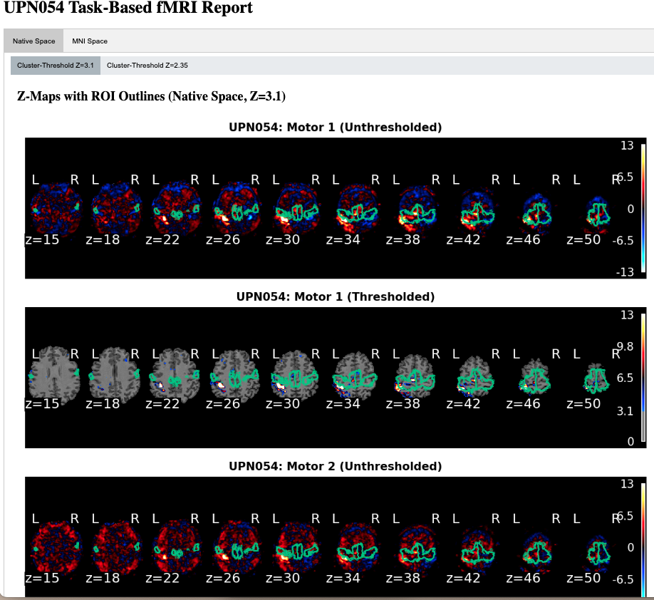
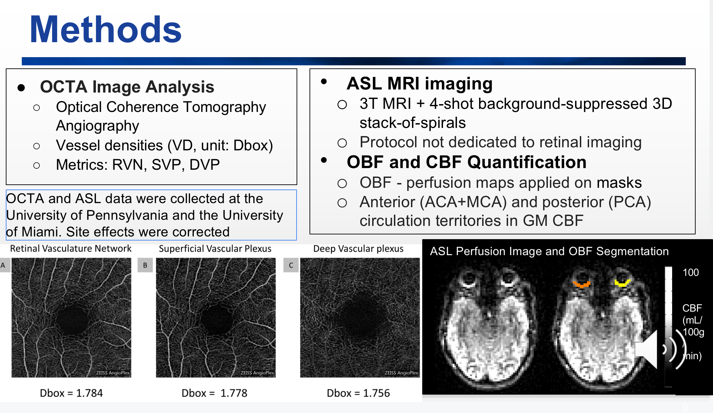
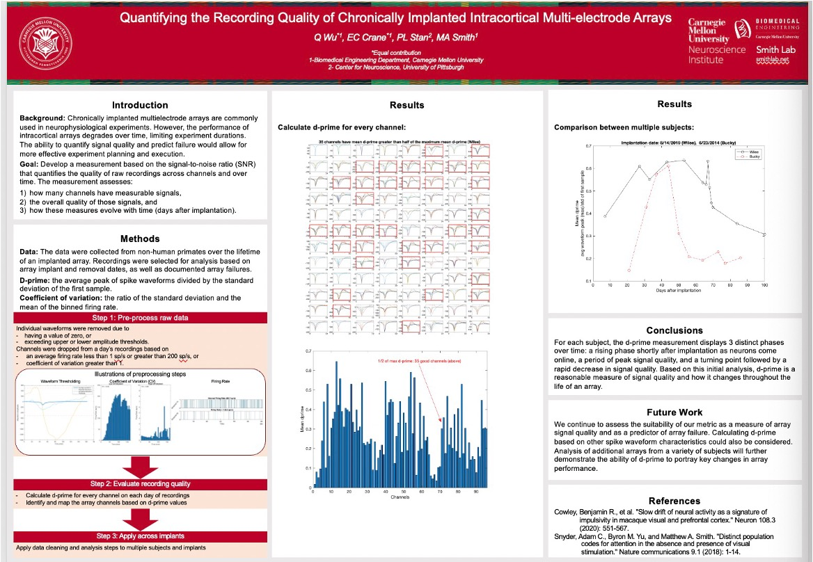

Research Projects
1. Comparative Analysis of fMRI-based Covert Consciousness Methodologies, RECOVER Lab, Penn Medicine, University of Pennsylvania
- Developed ASL MRI and fMRI data pipelines with Docker containers for cluster computing, generating HTML diagnostic reports; Compared the GLM approach to two data-driven methods: permutation testing (PT), a non-parametric method, and independent component analysis (ICA) and explored the clinical utilities of those methods in detection brain activation specific to the task.
- Collaborated on task-based fMRI experiments for coma patients, proposed NLP+ML method to quantify consciousness, published in a top-tier journal.
- Analyzed multi-modal imaging for brain-eye connectivity, presented at top conferences, completing a first-author paper.

2. Associations between Retinal Microvasculature, Orbital Blood Flow, and Cerebral Blood Flow in Healthy Adults, Detre Lab, Penn Medicine, University of Pennsylvania
- Analyzed multi-modal imaging data (MRI, OCTA) from 100 healthy adults using segmentation and statistical tools to investigate age-dependent brain-eye connectivity.
- Submitted a first-author manuscript to Investigative Ophthalmology & Visual Science, revealing novel insights into vascular relationships across brain and eye systems.
- Presented a poster at the ISMRM conference, highlighting findings on cerebral and retinal blood flow correlations.

3. Quantifying the Recording Quality of Chronically Implanted Intracortical Multi-electrode Arrays, Smith Lab, Dept. BME, Carnegie Mellon University
- Built preprocessing pipeline for neurophysiological data, proposed SNR metric for signal quality, supported publication results.
- Conducted experiments with non-human primates, collected neurophysiology and behavioral data, and analyzed to refine experiment design.

4. Implementation of Stabilizers with BCI and Assessment of Neural Signal Quality with Stabilizers over Time, R&D Data Science Intern, Blackrock Neurotech, Salt Lake City (Mentor: Dr. Spencer Kellis)
- Preprocessed MEA neurophysiological data (8,000+ trials), enhanced ML algorithm for signal stability, built validated feature matrix, and visualized results.
- Proposed device calibration metrics and presented enhancements for brain-computer interface technology.